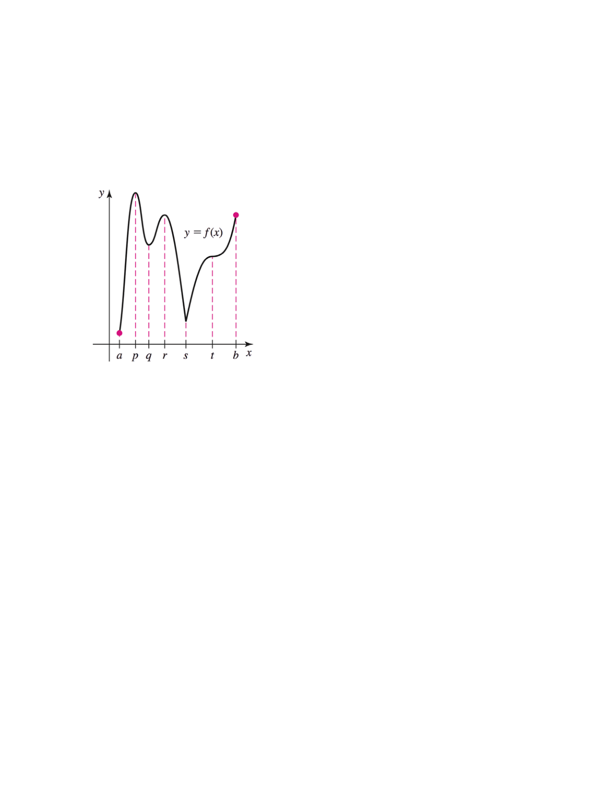

(p) The function \(f\) has a critical point and a local maximum at \(x=p\).
(q) The function \(f\) has a critical point and a local minimum at \(x=q\).
(r) The function \(f\) has a critical point and a local maximum at \(x=r\)
(s) The derivative of \(f\) does not exist at \(x=s\) because the function \(f\) has a corner at \(x=s\). The function has a critical point and a local minimum at \(x=s\).
(t) The function \(f\) has a critical point but not a local maximum or minimum at \(x=t\).